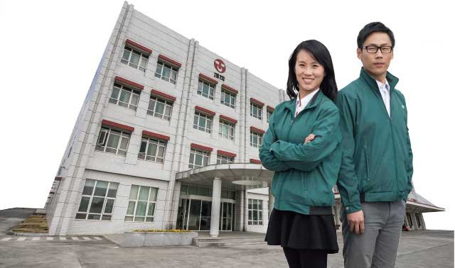
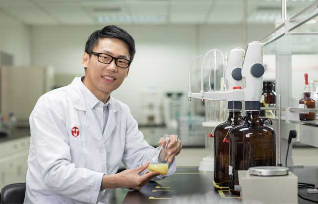

杭州顶可食品有限公司成立于2010年4月6日，主要生产销售沙拉酱、调味酱、有料沙拉、调味汁等系列产品。公司致力于服务广大烘焙及餐饮客户，调制适合中国人口味的西餐调味料、烘焙酱汁酱料系列，同时可提供专业全面的ODM(原始设计制造商)/OEM[代工（生产）]等个性化订制服务。
公司位于美丽的钱塘江畔下沙经济技术开发区，占地面积19,997m2，建筑面积23,567m2。共有沙拉酱、调味酱、有料沙拉、调味汁及茶碗蒸等多条生产产线，年产能30,000吨。公司获得ISO22000质量管理体系认证、清真食品认证（国际Hala认证）等多项认证资质。销售区域覆盖长三角、珠三角、西南、西北等广大地区，客户涵盖大型连锁餐饮及烘焙通路经销商及KA客户。
对左佳佳和许方方来说，2017年是全新的一年，充满了挑战。从今年起，杭州顶可归属于魏应行董事长的管辖，以往工厂生产的酱品大部分销往集团内部，而今后将大规模扩大外部客户。
左佳佳：再拼博一把
五年前，左佳佳和许方方先后加入公司。佳佳是河南人，在浙江杭州上的大学，毕业后便在杭州安家立业，先在公司的营销管理部实习，之后调到企划，负责25种产品的包装设计、文案推广以及整个产品规划。从今年起，佳佳的新岗位是总经理助理，除了企划的工作，还要处理总经理外务事宜和行政事务，“希望能达到领导的期望值，为他分忧解难，”内敛的佳佳认真地说道。
目前顶可除了沙拉酱等酱品外，还有一些调味酱、沙拉汁、三明治里的沙拉馅。产品种类24-30种，今年会上市更多新产品。面对公司业务方向的转变，工作量骤增，工作压力可想而知。尚在哺乳期的佳佳几乎每天工作十几个小时，好在多年的经验能助她一臂之力，对各部门和产品的熟知无疑非常重要。有多个岗位经验的她坦言自己更喜欢企划工作，因为相对来说好玩一些，不那么枯燥，也更具成长空间，“以前企划不需要对外，单纯做集团内，现在慢慢转移到与外部客户的对接上。”为迎合外部市场的需求，要上市许多 新产品就意味着要增加生产线。对佳佳而言，协助总经理优化生产效益、节约费用、解决一些影响效益的供应环节，还有改善机器故障的问题，都是前期阶段需要准备的。
在许方方的眼中，佳佳属于埋头苦干型，很少释放自己的情绪。佳佳这样评价自己：完美主义，总想兼顾得更多。“我很容易迁就别人，与领导期望的雷厉风行还是有距离。遇到重大事件，要上升到领导层面的时候、需要下决断的时候还是不够果断。”随着公司的变革，对佳佳个人来说也是一次转型，“就像保守型和激进型两种不同风格，我还在努力适应中，把心态调整好，希望再拼搏一把，撸起袖子加油干！”

许方方：成长速度还能再提高
许方方是顶可办公区域里为数不多的男生，小伙子特别热心肠，哪里需要搬个水、拿个货他都会主动帮忙。读食品科学与工程的他毕业后入职味全，检验婴儿配方乳粉。后来顶可有食安的位子空缺，他便被调至此。
食安部共有五人，QC和QA各有两人负责，“他们工作内容也不完全固定，有时会让四位同事互换下，以免产生视觉和思维上的疲劳。”方方脑筋活络，有着浙江人特有的精干。他笑称自己是非典型食安人员，与同事相处融洽，谈笑风生。
从职能上而言，食安与内部打交道比较多，与生产、研发部息息相关，“当产品研发出来后，我们需要对产品进行追踪调查，在追踪过程中发现问题提出并改善。关于顾客的投诉之类，由业务部门传达给我们，根据客户提出的具体要求做出相应对接。”今年公司要从B2B逐渐转变为B2C，对食安的要求更为严苛。“现阶段对我们部门来说有很多成长空间，工作内容随着客户群的扩大也要求得越来越细致，容错率更低，因为所有客户会对你的每个产品做检查。同时我们也要保持与政府相关部门的密切联系。”
与左佳佳一样，方方也感受到了前所未有的压力：“现在需要花大量时间去做梳理和准备，承担起更多的职责。”除却工作，初为人父的他肩上更是多了一份责任，心中多了一份牵挂，“养儿方知父母恩，我现在更牵挂的是父母，他们年纪越来越大，收入已不比年轻时，这让我很有紧迫感，想尽快承担起一个大家庭的责任。”
对自己要求颇高的方方认为自己成长的速度还不够快，如果公司的发展和自己的发展能够契合，那还会有一定的上升空间。“我不是特别在乎眼前的得与失，心态上更加看重长远的发展，希望今年能让我有更多的学习机会。”